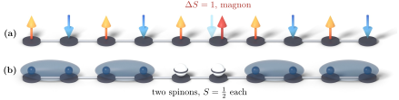

Page 15 of 16 of this session
3.12 Topology beyond electrons
All the invariants of this session were computed for the bands of electrons. Do they need electrons at all? We will now see that they do not. The Chern number and the Zak phase only use the eigenvectors of a matrix over the Brillouin zone, so the same topology appears for magnons, for spinons, for light and for classical waves.
We built all the tools of this session, which are the Chern number, the Zak phase and the bulk-boundary correspondence, around electronic band structures. However, none of the underlying mathematics requires electrons. The same invariants apply to any quantum excitation with a well-defined dispersion relation. Examples are magnons, which are the spin-wave excitations of an ordered magnet, and spinons, which are the fractionalized spin excitations of a quantum magnet. Both allow the same treatment with Berry curvature and Chern number. We will do it explicitly for magnon bands in Section 6.16, and in Section 8.9 we will see that spinons also have their own band structure.
In fact, the argument only needed a Hamiltonian, or more generally a matrix that describes how a wave propagates, so it applies to any system with a dispersion relation. This includes photonic systems, where light propagates through a periodic medium. It also includes classical systems, such as coupled pendula, vibrating lattices and electronic circuits, and all of them have shown topologically protected modes in tabletop experiments.
In the end, topology is a statement about the internal structure of the eigenvectors as a function of momentum, and this structure exists wherever there is a wave equation, quantum or classical.
\[D(k)\,|u_n(k)\rangle = \omega_n(k)\,|u_n(k)\rangle,\]
\[C_n = \frac{1}{2\pi}\int_{\text{BZ}} \Omega_n(k)\, d^2k.\]
Here \(D(k)\) is the Hermitian matrix that describes how the wave propagates in the periodic medium, and \(\omega_n(k)\) is its eigenvalue, which gives the dispersion relation. For a classical lattice \(D(k)\) is the dynamical matrix, and its eigenvalue is the square of the frequency. In both cases \(\Omega_n(k)\) is the Berry curvature of the eigenvectors \(|u_n(k)\rangle\), as in (3.4). For electrons \(D(k)\) is the Bloch Hamiltonian.

The main message of this session is the following. Topological systems have protected edge modes, and these modes are connected to a non-trivial value of a topological invariant that is computed only from the bulk. This happens in one and in two dimensions, and also in higher dimensions, and it is usually protected by a specific symmetry. For the Chern number this is translational symmetry and gauge invariance, and for the quantum spin Hall state it is time-reversal symmetry.
The Chern number of a band uses only its eigenvectors \(|u(k)\rangle\) over the Brillouin zone,
\[C = \frac{1}{2\pi}\int_{\text{BZ}} \Omega(k)\, d^2k, \qquad \Omega = -2\,\mathrm{Im}\,\langle \partial_{k_x} u|\partial_{k_y} u\rangle.\]
For which excitations can we define it?
Show the answers
- A. ✗ False
This is false. The Chern number is defined for a band that a gap separates from the others, which is the case of an insulator. The honeycomb lattice with the Haldane coupling \(t_2=0.1\,t\) has a gap \(6\sqrt3\,t_2=1.04\,t\), so it is not a metal, and its filled band has \(|C|=1\).
- B. ✓ True
This is true. The formula only needs the eigenvectors of the matrix that describes how a wave propagates in a periodic medium. It does not use the charge or the Pauli principle, so it holds for any wave equation.
- C. ✗ False
This is false. The formula has no charge in it. The magnons of a honeycomb ferromagnet are neutral. With a second-neighbor hopping \(0.1\,t\) of phase \(\pm\pi/2\), which a Dzyaloshinskii-Moriya interaction gives, their two bands have a gap \(1.04\,t\) and the Chern numbers \(+1\) and \(-1\).